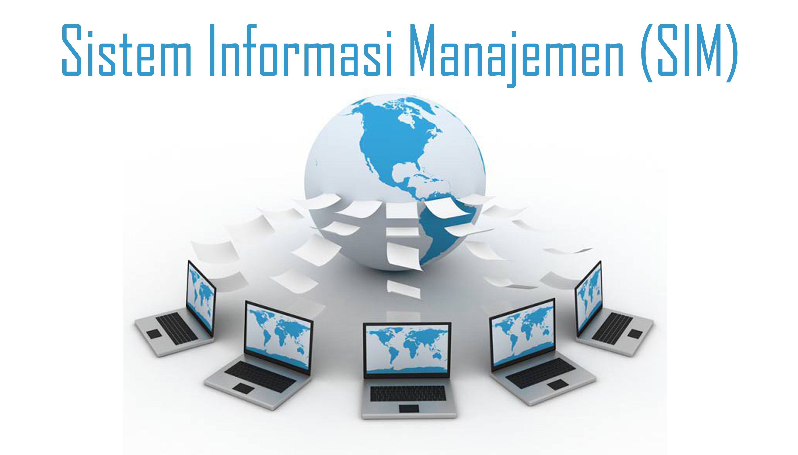

Gambar: Representasi Sistem Informasi Manajemen
Sistem Informasi Manajemen (SIM) merupakan salah satu mata kuliah penting yang berperan besar dalam menunjang pemahaman mahasiswa mengenai bagaimana informasi digunakan secara strategis dalam organisasi, khususnya dalam proses manajerial dan pengambilan keputusan.
Di era digital saat ini, informasi menjadi aset yang sangat berharga. Organisasi tidak hanya membutuhkan data, tetapi juga sistem yang mampu mengelola, mengolah, dan menyajikan data tersebut menjadi informasi yang berguna. SIM hadir untuk menjawab kebutuhan tersebut.
Apa Itu Sistem Informasi Manajemen?
Secara sederhana, SIM adalah sistem yang dirancang untuk mengelola informasi dalam suatu organisasi guna mendukung fungsi-fungsi manajemen seperti perencanaan, pengorganisasian, pengarahan, dan pengendalian. Sistem ini memadukan antara teknologi informasi, sumber daya manusia, dan prosedur kerja yang terstruktur.
Manfaat Mempelajari SIM
- Memahami bagaimana informasi dikelola secara efisien dan efektif di lingkungan organisasi.
- Meningkatkan kemampuan analisis dalam melihat kebutuhan informasi untuk proses bisnis.
- Menyiapkan mahasiswa menghadapi dunia kerja yang kini berbasis teknologi dan data.
- Mendorong pengambilan keputusan yang tepat berdasarkan informasi yang valid dan terstruktur.
Komponen Utama dalam SIM
- Data: Bahan mentah informasi. Data yang akurat dan relevan menjadi dasar dari keputusan yang baik.
- Hardware: Perangkat fisik seperti komputer, server, dan jaringan yang digunakan dalam sistem informasi.
- Software: Aplikasi atau program yang mengatur proses pengolahan data agar menjadi informasi yang bisa digunakan oleh manajemen.
- People (Sumber Daya Manusia): Orang-orang yang terlibat dalam penggunaan dan pengelolaan sistem informasi, baik sebagai pengguna maupun pengembang.
Perbedaan SIM dengan Mata Kuliah Lain
- Fokus pada integrasi teknologi informasi dalam konteks manajemen, berbeda dari manajemen operasi yang lebih teknis.
- Menekankan pada analisis kebutuhan informasi, berbeda dari statistika yang fokus pada pengolahan angka.
- Menyentuh aspek strategis, teknis, dan praktis secara bersamaan.
Relevansi di Dunia Kerja
Banyak perusahaan dan institusi saat ini mencari lulusan yang tidak hanya paham manajemen, tetapi juga mampu mengoperasikan dan memahami sistem informasi. Oleh karena itu, pemahaman terhadap SIM menjadi bekal penting untuk:
- Bekerja di bidang teknologi informasi, administrasi sistem, dan analisis data.
- Menjadi manajer yang melek digital dan mampu mengambil keputusan berbasis data.
- Mengembangkan inovasi dalam proses kerja melalui pemanfaatan teknologi.